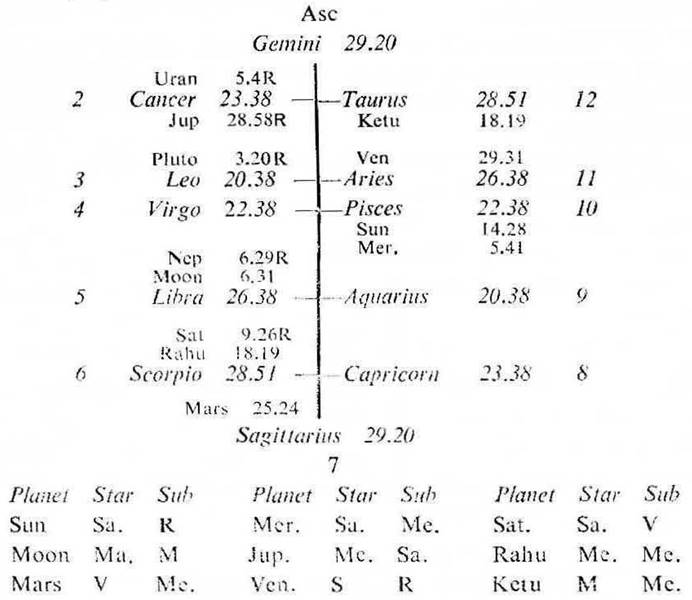

Female. Birth 28-3-1956 Wednesday: 1-15 P.M. I.S.T.; 23°N 2′, 72°E 35′; Ayanamsa 23° 9′.

4th Cusp: The sub lord of the 4th cusp is Venus, it occupies the 11th. It is in the star Sun which occupies the 9th and which is in conj. with Mercury the owner of the 4th. Thus Venus is connected with 4, 9 and 11. So the native will acquire school as well as college education during the periods of the significators of 4, 9 and 11.
(a) The native was born during the period of Mars with balance of 29 days. Then runs the period of Rahu from 27-4-1956 and continues upto 27-4-1974. From 27-4-1974 the period of Jupiter begins.
Rahu is in the Star and Sub Mercury the owner of the 4th and the occupant of the 9th. So it is the significator of 4, 9 and connected with 4 and 9.
Jupiter is also in the Star of Mercury in 9 and owning 4, it is in the Sub Saturn owning 9 in 5. So it is also the significator of 4, 9 and connected with 5 and 9.
Hence the native has to receive education during the periods of Rahu and Jupiter.
(b) The native will complete her studies during the joint period of Jupiter (the significator of 5) and Saturn the significator of 5 (being in its own Star in 5 and in the Sub Venus owning 5).